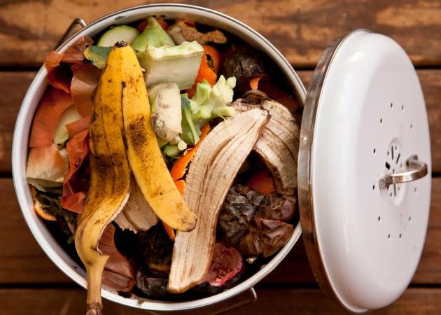

The Silent Crisis
while

The Solution: UN Goal #12
 The targets below were taken from the UN Sustainable Development Goals website.
The targets below were taken from the UN Sustainable Development Goals website.
12.1: Implement the 10-year framework of programmes on sustainable consumption and production, all countries taking action, with developed countries taking the lead, taking into account the development and capabilities of developing countries.
12.2: By 2030, achieve the sustainable management and efficient use of natural resources.
12.3: By 2030, halve per capita global food waste at the retail and consumer levels and reduce food losses along production and supply chains, including post-harvest losses.
Our Current Food Consumption and Waste
This following data is from the Food and Agriculture Organization of the United Nations. The percent loss of each food category was calculated by dividing the quantity of losses by the quantity of production of each item. Only items with losses higher than 3% are displayed.
As you can see, in North America...
Why isn't it sustainable?
As our population continues to grow, the amount of food we as a species requires will continue to grow as well. After all, we cannot simply start lowering the amount of food we eat. We must therefore plan for an ever-increasing demand for food.
Increasing food output is not always feasable...
As our demand on food continues to increase, we must dedicate more and more of our resources and our land towards food. Agriculture is very costly, occupying large areas of land, and using large quantities for fertilizer and hydration. However, as we continue to deplete our natural resources and occupy more and more of our land on this planet, it is evident that as something has to change before our production of food is no longer sustainable.
... but conservation is.

Obviously, we cannot expect to control the amount of food we as a population put into our mouths. There are then only two things we can change: how we produce food, and how much of our food goes to waste. New food production methods are being researched, but many of the new, more efficient food production methods, such as synthetic protein-based meats, are years, if not decades away from being viable food sources. As such, for now, we must be very careful about how we consume food to minimize food waste.
Is Earth really warming up?
Yes!
2018 has been the fourth year of increasing temperatures in a row, and the trend is expected to continue.
How many lightbulbs can a single solar panel power?
60!
A typical 5.5ft by 3ft solar panel can power 60 LED lightbulbs for 4 hours a day.
How many lightbulbs can a single solar panel power?
60!
A typical 5.5ft by 3ft solar panel can power 60 LED lightbulbs for 4 hours a day.
How many lightbulbs can a single solar panel power?
60!
A typical 5.5ft by 3ft solar panel can power 60 LED lightbulbs for 4 hours a day.
What Can You do?
There are many things you should do as a responsible food consumer.
Shop Responsibly!
→ Pick produce that won't stay fresh for long. Remember to consume it while it's still fresh - it'll taste the same and it won't get end up in the dump!
→ Pick only what you can consume! Refrain from purchasing huge batches of produce, especially produce that rots quickly.
Donate excess food!
Donating excess food is a great way to prevent food waste. Here are a number of places you can donate food you can't eat:
→ A food bank or soup kitchen
→ Other charities (check online!)
→ Your workplace
Other food-saving practices!
→ Plan your meals and what you're going to eat for the week. This will help avoid over-purchasing food.
→ Create or label certain foods "Eat this first". You'll save money and nourish yourself instead of the compost.
Further Reading and Additional Resources
www.google.ca